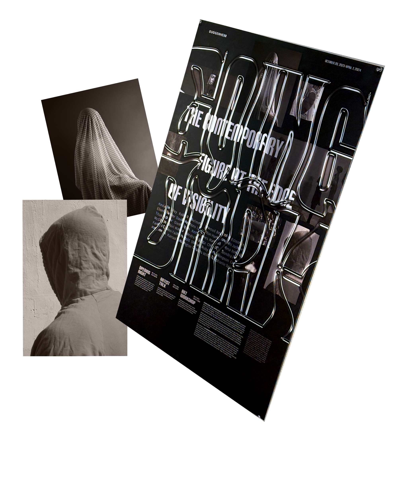
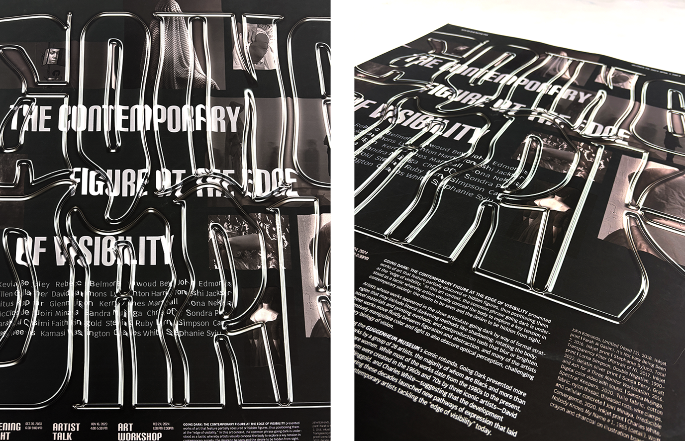
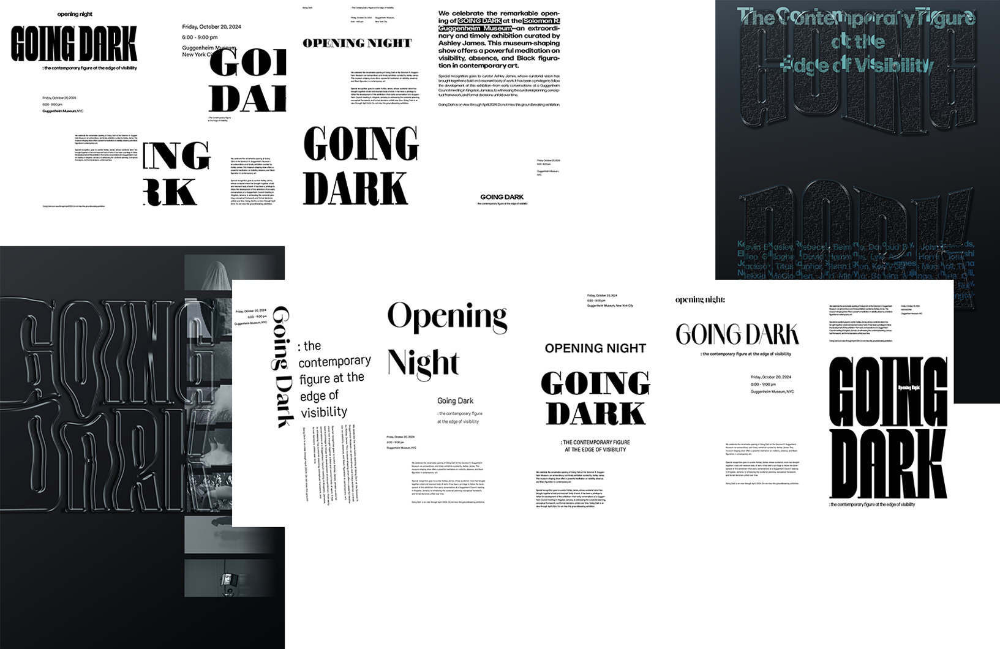

Going Dark
Exhibition Poster
Year
Medium
Measurement
Instructor
2025
Indesign, Photoshop, After Effects
23 in x 33 in
Megan Irwin

Context
In an era of constant digital exposure, both the desire to be seen and the desire to remain hidden have intensified. Within this tension, the veiled human figures in the Guggenheim exhibition “Going Dark” gain new resonance. To express this ambivalence toward visibility, I used distorted, transparent glass typography. The text blurs and fragments the content behind it, while simultaneously creating a sense of immersive pull.
Strategy
I explored multiple layout compositions and discovered that positioning “Going Dark” as the dominant element established the clearest visual hierarchy and structural balance. While the concept of glass typography remained constant, I iterated extensively to calibrate its distortion, transparency, and relationship to the background imagery. A kinetic typography video was developed to accompany the poster as a social media advertisement. The video translates the poster's visual system into motion: the morphing glass typography is animated with a fluid, liquid-like movement that reinforces its sense of distortion.


